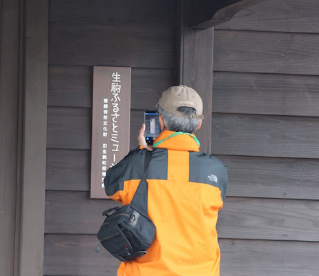
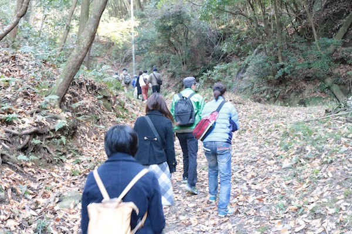
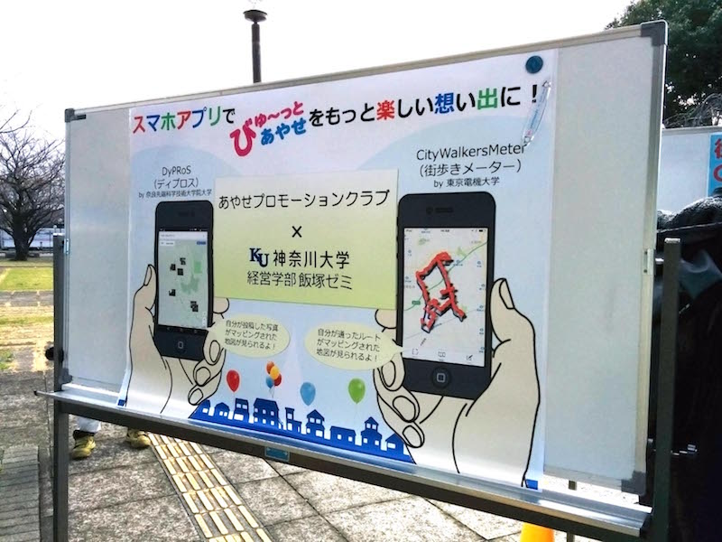
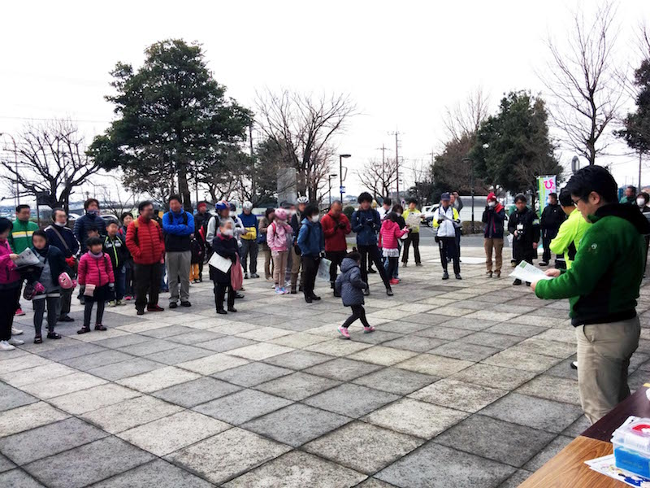
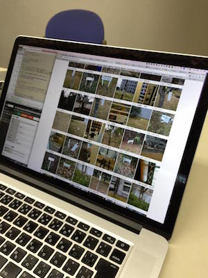
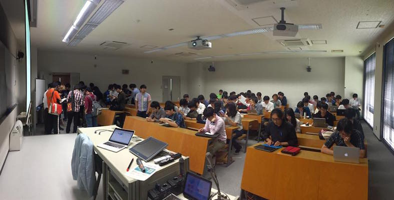
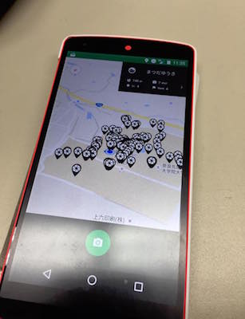
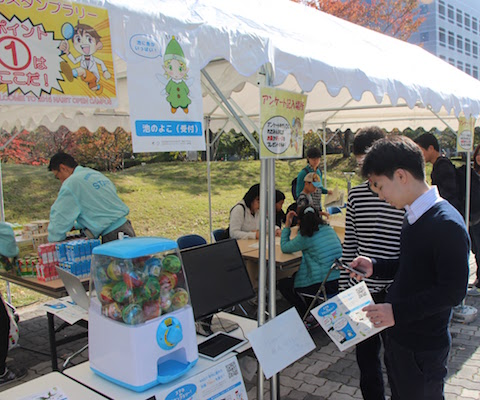

Eventsイベント
Events archive
ParmoSense は、すでに多くの種類のイベントで導入されています。
- マッピングパーティ
- スタンプラリーイベント
- 街歩きイベント
- 観光イベント
- 大学講義
マッピングパーティ ～千里ニュータウンの魅力を発信しよう！～街歩き・マッピングパーティでの活用
2018年2月大阪府吹田市が開催した、南千里の魅力スポットを探す街歩きマッピングパーティに活用されました。 見つけたスポットの情報を編集、オープンデータ形式で出力するために用いられました。
大阪市立大学生活科学部居住環境学科 学外ワークショップ街歩きでの活用
2017年6月石川県金沢市を6つのグループに分かれて同時に街歩きを行い、都市環境・居住環境の価値を再評価するためのワークショップで活用されました。 ParmoSense の位置情報付き写真の収集機能、それらの情報へのラベリング機能が用いられました。
和束町ウィキペディア・タウンマッピングパーティでの活用
2018年2月京都府相楽郡和束町の魅力をインターネット百科事典ウィキペディアに書き加えていくイベントにて活用されました。 参加者が収集した情報をで編集、出力するために用いられました。
Civic Tech Party vol.4 & 5街歩き・マッピングパーティでの活用
2016年12月・2017年1月IKOMA Civic Tech Award 2016 に際して開催された、 「生駒の地域課題の解決」「生駒の魅力発信」に役立つアプリやアイデアのヒントを得るためのイベント “Civic Tech Party” に活用されました。
【Vol.4】 観光ボランティアの方と一緒に街歩きをしながら、 普段気づかなかった地域の魅力的なスポットの位置情報＋写真を集めるイベント（マッピングパーティ）に活用されました。
【Vol.5】 収集した位置情報＋写真に情報（詳細な情報やコメントなど）を追加し、kml形式で出力、地図上にマッピングするワークショップに、 ParmoSense のラベリング機能・オープンデータ出力機能が活用されました。
IKOMA Civic Tech Award 2016 - Civic Tech Party

- 
- 
びゅ〜っとあやせサイクルラリーでの活用
2016年2月・2017年3月神奈川県綾瀬市で実施されているサイクルラリー（自転車に乗り市内のチェックポイントを巡る）イベントにて、 電子スタンプとして活用されました。 他の参加者の情報（チェックイン状況・ランキングなど）をお互いにシェアすることにより、 イベントに付加的な楽しみを提供しています。
- 
- 
ユビキタス情報処理講義での活用
2016年2月・2016年6月・2017年4月奈良先端科学技術大学院大学で実施されている、 ユビキタスコンピューティングにおける基礎知識と応用技術を学ぶ「ユビキタス情報処理」という講義の、 “人を使った都市センシング” の実習課題として活用されました。
学生自身が ParmoSense を使って学内の様々な情報（樹木の情報や施設の故障など）を収集し、 地図へと可視化することで、「マッピングパーティ」や「Fix My Street」といった、 情報技術を活用した社会の取り組みを学びました。
- 
- 
- 
オープンキャンパス in NAISTスタンプラリーでの活用
2016年11月奈良先端科学技術大学院大学の CICP（Creative and International Competitiveness Project）に採択されたプロジェクトの実証実験として実施された、 NAIST オープンキャンパスの電子スタンプラリーアプリとして活用されました。
- 


京都観光キュレーション実験観光での活用
2016年11月・2017年11月奈良先端科学技術大学院大学 情報科学研究科 ユビキタスコンピューティングシステム研究室「観光キュレーション」研究グループの、 京都における実証実験用のアプリとして活用されました。 キュレーションに用いるための情報の収集（事前調査）および、キュレーションした情報の被験者への提供という2つの役割を果たしています。